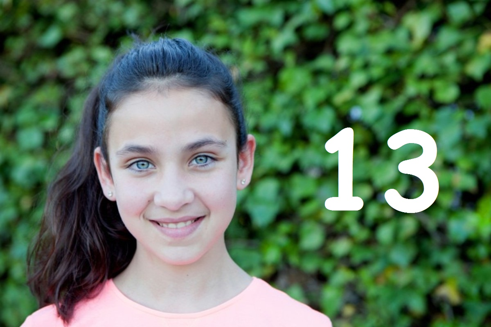

CHILDREN ARE THE FUTURE
Nurturing The Future is more than giving your child food, shelter and clothing. It is about building a healthy and strong emotional relationship (attachment) between you and your child that's leads to the harmony between your child and the family,friends,society,the environment and mother earth... It means you being your child's safe base and hence providing a healthy and a bright future to the future generations.
HOW CAN WE NURTURE CHILDREN IN THE CORRECT MANNER ?
We should be aware of the stages of the child's development so that we don't expect too much or too little from the child.
We must promote mutual respect and trust.
We must listen to the child.
We should look at our own problem-solving and coping skills.
We must teach them our existence of the past, the present and the future.
The list is endless.......
Providing needed education and teaching chores,manners and ettiquates of a particular age will give a strong base of becoming a good human being, hence the healthy existence of our planet too.
CHILDREN ARE OUR FUTURE, AND THE PLANET’S. HERE’S HOW WE CAN GROOM OUR CHILDREN IN A RIGHT MANNER SO THEY CAN TAKE CARE OF OUR PLANET TOO
Your 2-year-old will love to
show off their budding motor skills.
2-year-olds are just beginning
to have better control over their
their hand and finger movements
Some good websites about 2 year
Two-year-olds are also capable of
empathy—understanding the feelings
of others. You might see a child
comfort a peer who is hurt or even
cry when he sees another child who
is upset. At the same time,toddlers
still love to say “No!” and struggle
with resolving conflicts with friends.
Some good websites about 2 year
olds milestones are :-
VeryWellFamily (Family's Choice)
CDC (USA Gov Site)
WebMD (Doctor's Official Choice)
HealthyChildren
At around age 3, children’s
imaginations and language skills
seem to get supercharged. They’re
figuring out all kinds of words,
making up stories, play activities
By the age of three years, most
toddlers have started to feel
emotions like fear, embarrassment,
empathy, envy, guilt and shame.
Your toddler is also learning
about a big new emotion–frustration.
They are likely to: get frustrated
and cry, yell or hit out when they
don't get their way.
Some good websites about 3 year
olds milestones are :-
VeryWellFamily (Family's Choice)
WebMD (Doctor's Official Choice)
HealthyChildren
As 4-year olds develop physically,
they not only grow taller but
continue to get a better handle
on their gross and fine motor
skills. They are mastering hand
and finger skills, such as those
used for drawing and writing.
Four-year-olds are starting to
understandthat others have
feelings, feelings,too,and they
can relate when a friend is
feeling sad or hurt.
Some good websites about 4 year
olds milestones are :-
VeryWellFamily (Family's Choice)
CDC (USA Gov Site)
RaisingChildren
At age 5, children are entering the
"big kid" world of better
emotional control and
regulation. Many 5-year-olds
are "people pleasers," who
actively want to make
friends and receive positive
responses from adults. used
for drawing and writing..
Kids can express their
feelings through facial
expressions, through their
body, their behaviour and
play. Sometimes they may
act out their feelings in
physical, inappropriate
or problematic ways.
Some good websites about 5 year
olds milestones are :-
VeryWellFamily (Family's Choice)
CDC (USA Gov Site)
MedlinePlus
BirthBaby
At 6 years old, children will exhibit
a wide range of new physical skills.
Some may show natural athleticism
while others will work on accomplishing
simple skills such as throwing
or catching a ball.
Some good websites about 6 year
olds milestones are :-
By age 6, kids are getting
more and more independent from
their parents. They will try
to show how big they are,
and do things that might
be dangerous. Peer acceptance
becomes more important
than before. They are
learning to cooperate and share.
Some good websites about 6 year
olds milestones are :-
VeryWellFamily (Family's Choice)
WebMD (Doctor's Official Choice)
MottChildren
At this age, kids will also develop better
coordination and balance and
can learn to do more
combinations with their motor
skills, such as moving around
while they're dancing. The more
physically active they are,
the faster these skills develop.
Seven-year-olds can typically
talk about their emotions
freely and have more emotional
control, especially in a
public setting. The emotional
development of a 7-year-old
will result in strong
emotional reactions. Children
of this age tend to complain,
feel guilty, shameful, etc.
Some good websites about 7 year
olds milestones are :-
VeryWellFamily (Family's Choice)
WebMD (Doctor's Official Choice)
MottChildren
For 8-year-old children,
physical development is
more about refinement of skills,
coordination, and muscle control
rather than huge changes.
while they're dancing. The more
peer friendships start to
become very important in
their social and emotional
development.
Some good websites about 8 year
olds milestones are :-
WebMD (Doctor's Official Choice)
VeryWellFamily (Family's Choice)
MottChildren
Nine-year-old children are
also becoming more aware
of real-world dangers and
disasters. At nine, children
are better able to handle conflict.
For the children in this age it
becomes more emotionally
important to have friends
Experience more peer pressure
Some good websites about 9 year
olds milestones are :-
WebMD (Doctor's Official Choice)
VeryWellFamily (Family's Choice)
MottChildren
Being 10 is all about change.
It is a period of transition
that can offer challenges
and delights as children
start to embrace the
approach of adolescence.
At age 10, you can expect
your child to have more
control over emotions and
may see her becoming more
skilled at handling conflict
and negotiating solutions
with friends..
Some good websites about 10 year
olds milestones are :-
VeryWellFamily (Family's Choice)
MottChildren
Cigna
Eleven-year-olds are also
beginning to realize that
there are multiple ways
to look at a piece of
information, situation,
or issue.
Children at this stage
have entered a highly
emotional space.They're
also hitting a time when
peers will have the
most influence on them
Some good websites about 11 year
olds milestones are :-
VeryWellFamily (Family's Choice)
Childrens
WebMD (For Girls)
WebMD (For Boys)
A 12-year-old’s brain has stopped
growing in size, but it’s
nowhere near done developing.
Abstract thinking, problem-solving,
and logic are all becoming easier.
Children in this age group might:
Show more concern about body
image, looks, and clothes.
Focus on themselves; going
back and forth between high
expectations and lack
of confidence. Experience
more moodiness.
Some good websites about 12 year
olds milestones are :-
WebMD(For Girls)
WebMD (For Boys)
VeryWellFamily (Family's Choice)

Thirteen-year-olds develop
the ability to think
abstractly. Instead of
only thinking in terms of
tangible objects, they
begin to understand concepts
such as faith and trust
It's normal for your teen
to feel uncertain, moody,
sensitive, and self-conscious
at times. And during this
time, it becomes more
important than ever to
fit in with peers.
Some good websites about 13 year
olds milestones are :-
WebMD (For Girls)
WebMD (For Boys)
VeryWellFamily (Family's Choice)
There are exciting times and
many challenges facing
14-year-olds as they
start heading down the
path toward becoming a
healthy responsible adult
Focus on themselves;
Experience more moodiness.
Express less affection
toward parents; sometimes
might seem rude or
short-tempered.
Some good websites about 14 year
olds milestones are :-
WebMD (For Girls)
WebMD (For Boys)
VeryWellFamily (Family's Choice)
.jpg)
Most 15-year-olds can
communicate in an adult-like
fashion and are able to
hold appropriate conversations.
Most 15-year-olds
have specific or hobbies
that they enjoy.
hold appropriate conversations.
Go through less conflict
with parents. Show more
independence from parents.
Have a deeper capacity
for caring and sharing.
Some good websites about 15 year
olds milestones are :-
WebMD (For Girls)
WebMD (For Boys)
Childrens
VeryWellFamily (Family's Choice)
A 16-year-old knows that
adulthood isn’t far away,
so they will start to
show more independence
and engage in less with
conflict with their parents.
They also will begin making
decisions with that
independence in mind.
By age 16, most teens are
developing the ability to
think abstractly, deal
with several concepts
at the same time, and
imagine the future consequences
of their actions. They may also
begin to grasp political, moral,
social,and philosophical concepts.
Some good websites about 16 year
olds milestones are :-
WebMD (For Girls)
WebMD (For Boys)
VeryWellFamily (Family's Choice)
Most 17-year-olds are
goal-oriented. They're
beginning to imagine what
type of life they want
to create beyond high school.
By age 17, most teens have
good organizational skills.
As a result, they're able to
successfully juggle extracurricular
activities, part-time jobs,
and school work.
But even though many 17-year-olds
think they're adults,
their brains still aren't yet
fully developed.
Some good websites about 17 year
olds milestones are :-
WebMD (For Girls)
WebMD (For Boys)
VeryWellFamily (Family's Choice)
By age 18, teens exhibit a
lot of adult-like thinking
They're able to understand,
plan, and pursue long-range
goals. They often show a
lot of concern for the future.
Most 18-year-olds are more
comfortable seeking advice
from older people and their
parents again. They realize
that they need some guidance
and help to navigate the
adult world and they're
more open to feedback than
they were during their
younger teen years.
Some good websites about 18 year
olds milestones are :-
WebMD (For Girls)
WebMD (For Boys)
VeryWellFamily (Family's Choice)
PARENTS CAN TAKE A NUMBER OF STEPS TO HELP THEIR CHILDREN TO LEARN ABOUT THE WORLD AND CARING FOR OUR ENVIRONMENT.
SOME WAYS TO DO THIS ARE...
• Reduce plastic waste. ...
• Create a backyard or community garden. ...
• Explore and enjoy nature. ...
• Teach environmentally-friendly habits at home.
10 THINGS TO DO TO SAVE OUR PLANET EARTH AS A STUDENT
• Eliminate Waste from Lunches.
• Stop Littering.
• Reduce Paper Consumption.
• Save Electricity.
• Eliminate Waste from Lunches.
• Save Water.
• Swap Regular School Supplies.
• Bring Reusable Bags to the Grocery Store.
• Walk to School or Take a Bike, Avoid Taking Cars or Carpool WHEN POSSIBLE.
Adults are strong role models for the way children understand the importance of the world around them. If adults act in a respectful way towards nature, children will receive the message to act responsibly and that the nature is entitled to be cared for and protected by us.
This Webpage is better viewed on laptop/desktop.
This Web page is designed and created by Evelyn sara, 9th Grade , Army Public School,Bangalore